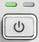

The following applies to a standalone usage of the R&S CMW. If you want to use the instrument in a multi-CMW setup, start up the instruments as described in the R&S CMWC documentation.
Prerequisite: The instrument is connected to the AC power supply and the power switch on the rear panel is in position I (On).
| ► | Check the standby key in the bottom left corner of the front panel. If the right, amber LED is on, press the standby key to switch the instrument to ready state (indicated by the left, green LED).  |
The tester automatically performs a system check, boots the Windows operating system and starts the CMW application. If the previous session was terminated regularly, the CMW application uses the last setup with the relevant instrument settings.
Once the startup procedure has been terminated, the dialog opened in the previous session is displayed.
| ► | Press the standby key. The instrument saves the current setup, closes the CMW application, shuts down the operating system and sets the instrument to standby state. You can also perform this procedure step by step like in any Windows session. |

If the instrument is running, never switch off the rear panel switch or disconnect the power cable. Otherwise, the current settings and other data can be lost. Always shut down the instrument via the standby key before taking one of these actions.
If you use a solid-state drive (SSD) as system drive, start the instrument at least once a year. Otherwise, the data stored on the SSD can be lost. SSDs are not designed for long-term storage without power supply.